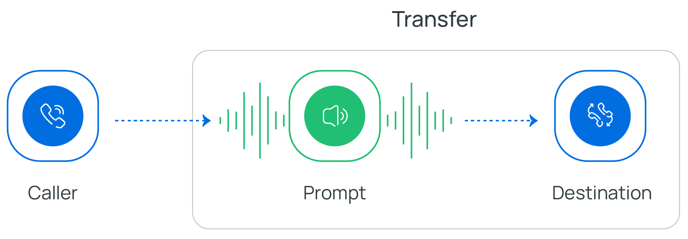
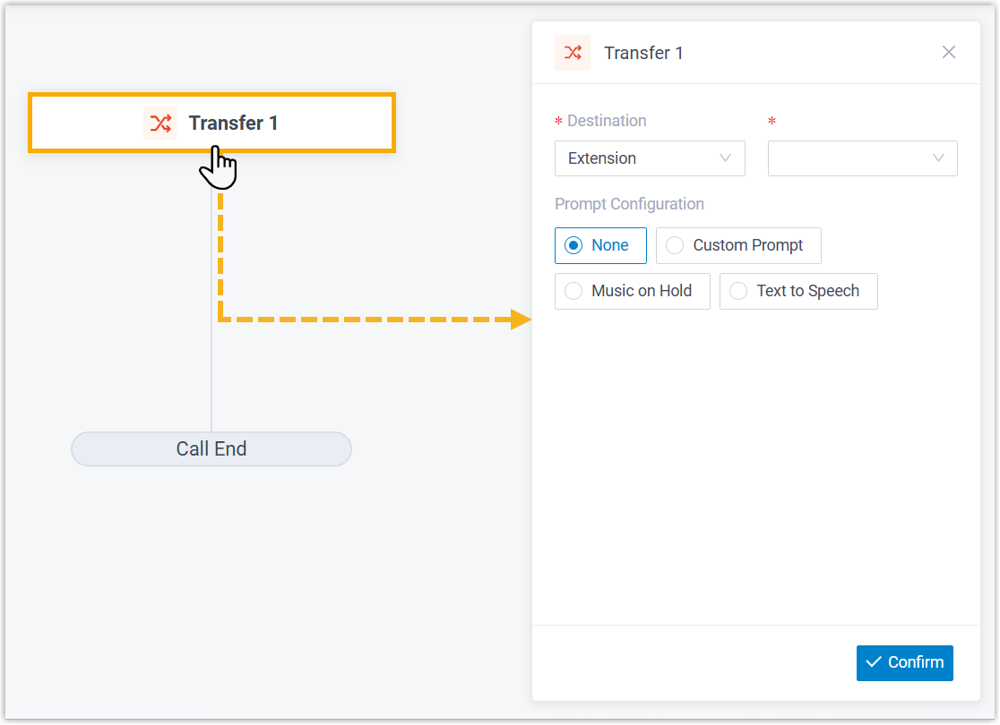
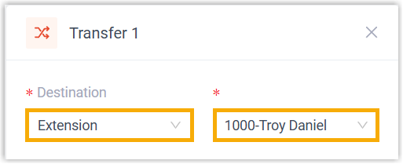
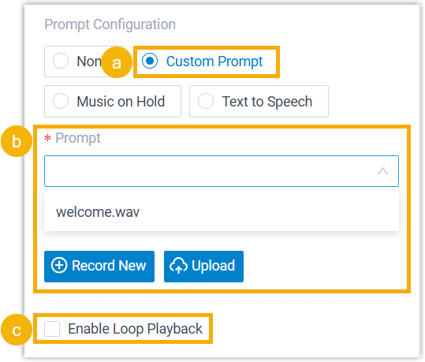
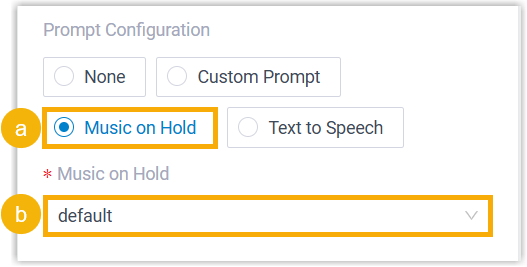
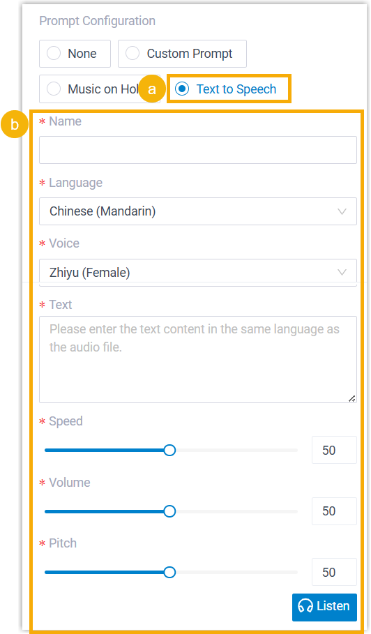
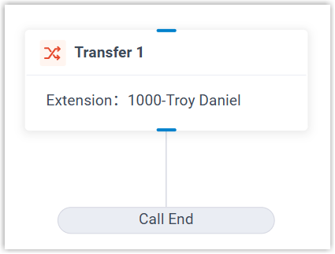

Transfer
This topic provides an overview of the Transfer component, and describes its configuration as well as supported component connections.
Component introduction
Transfer component is one of the end components to terminate a call flow. It allows you to transfer callers to a designated destination, and optionally configure prompts to inform them of the transfer.

- Supported call destinations
-
- Extension
- Extension Voicemail
- Ring Group
- Queue
- Group Voicemail
- Conference
- External Number
- Call Flow
- Supported prompt types
- You can add audio prompt(s) or a text-to-speech message to inform callers of the call transfer.
Component configuration
-
After adding Transfer component to a call flow, click Transfer component to proceed with the configuration.

- In the Destination drop-down lists, specify the
destination where callers will be transferred.

- Optional: Configure audio prompt(s) or a text-to-speech message to
inform callers of the call transfer.
Item Instruction Custom Prompt 
- Click Custom Prompt.
- Specify custom prompt(s).Note: A maximum of 5 custom prompts is supported.
- To choose from an existing prompt, select it from the drop-down list of Prompt.
- To use a new prompt, click Record
New to record prompt with an
extension, or click Upload
to upload an audio file.Note: The new prompt will be saved in .
- Optional: To play the custom prompt in
a loop, select the checkbox of Enable
Loop Playback.Note: The looped prompt will be overridden if the next connected component is configured with a prompt.
Music on Hold 
- Select Music on Hold.
- Select an existing MoH from the drop-down list of Music on Hold.
Text to Speech (TTS)  - Select Text to Speech.
- Complete the rest of the configurations.Note: The new TTS message will be saved to the system and synchronized to .
- Click Confirm.
The selected destination will appear on the component.

Component connections
Transfer component comes with a built-in Call End branch that terminates the call, and the branch can be connected to only one Developer component.